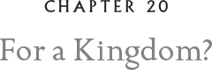

“Look, look at them, Mum! It’s almost like they’re flying!” Ifghar hooted as we caught our first glimpse of the Hock.
Indeed it was. The sky seemed to sizzle on this nearly moonless night with iridescent jolts of light as dozens upon dozens of Kielian snakes leaped from the cliff. It would be impossible to pick Hoke out from the hundreds of snakes that shimmered in the night air. But that was not what occupied me at the moment. I was studying their descent as they plunged. Some floated down slowly, others fell at a blistering speed toward the churning waters beneath them. They evidently had ways of controlling their speed. How could this be? They had none of the arsenal of feathers we had to shape the wind beneath our wings. They couldn’t shift spoiler flaps into gear, as we could, to slow for landing. What could they do, for they were just long vertical, wingless, legless, slithering tubes covered in scales? Their shape alone defied such possibilities.
“Slow down and enjoy it, Yentse!” someone hissed. I believe it was a cerulean lazuli but I couldn’t be sure. I watched the snake carefully.
“Didn’t your mum ever tell you not to stare?” she hissed at me as she drifted through the air in a slow dive.
“Oh, sorry. I was just so fascinated at how you can adjust the speed of your descent.”
This seemed to please her.
“Well, glad you appreciate it! My son down there doesn’t get at all the finer points of diving yet. It’s all just a quick plunge for him. Look at the pretty designs we can make!” With that, she curled herself into a tangled triple loop and scrolled the night with shimmering hues of blue against the blackness. For a moment, it was as if she were nearly still, as if she had stopped the world for a long, languorous hover. I noticed a collarlike ruff of scales that had extended from her neck. It wasn’t dissimilar from the secondary set of scales that I noticed on Hoke when he had smashed the rock so long ago.
“You see,” she said as she coiled herself into a double helix. “We can lighten our bodies.”
“How do you do that?”
“Hordo knows!” she said. “It’s connected with breathing and then these.” The scales on her ruff shimmered as she fanned them out, and her speed slowed. Are they like wings? I wondered. This was all enormously fascinating to me.
The snake’s name was Dylan. She invited my mum, Ifghar, and me to her nost.
“Where’s the young’un we saw diving with you?” Mum asked.
“Hordo knows!”
“Who’s Hordo?” Ifghar asked. I was mortified by this question, but Dylan shrugged it off.
“Hordo, dear,” my mother said, “is the Kielian snake spirit. We have Glaux, our spirit. They have Hordo.”
“But ours is better, right?”
Mum and I both gasped. I was horrified. But Mum replied sweetly, “Ifghar, there’s no such thing as a ‘better spirit.’ It’s not a competition.”
A croaking sound issued from Dylan’s throat, the sound of Kielian snake laughter. “Oh, goodness, you owls are so curious. What would you like to know, young’un?” she said to me.
“Lots, ma’am,” I said.
Ifghar cocked his head. Mercifully, he remained silent, but I saw the question in his eyes. She’s a snake — why did you call her “ma’am” like she’s important? The words might as well have been spoken, and I saw a glare rise up in Dylan’s slitted eyes.
“First of all, what species of Kielian are you?” I asked.
“I’m not a nest-maid,” she replied sharply, and then, as if to put a finer point on it, she showed a bit of fang. “There has never been a nest-maid in our family. I am a cerulean lazuli with a touch of cobalt.” As she said the word “cobalt,” a silvery blue seemed to flash through her scales. “The cobalt is mostly visible on bright sunny days or under a full-shine moon.”
A torrent of questions poured from me — how long could a snake hold its breath underwater? What were those scales that flared like a ruff to slow her plunge?
“My extended scale plates, or ESPs,24 as we call them.”
We talked for several minutes before my mum said, “Lyze, don’t you think you’ve asked enough questions? We don’t want to wear our host out.”
“Just one more question!”
“Go ahead, young’un,” Dylan said.
“All right. I know you’ve never served as a nest-maid, but have you ever thought of another kind of service?”
“For owls?” she asked. Her eyes slitted, revealing only a glowing line of luminous cobalt.
“For the kingdom,” I replied quietly.